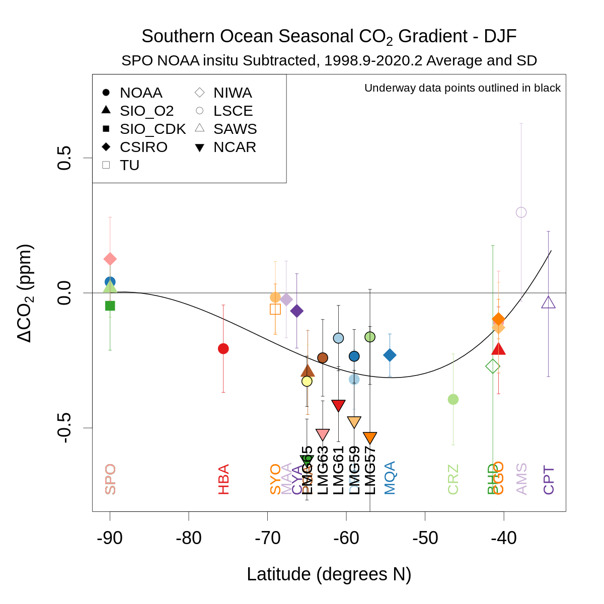
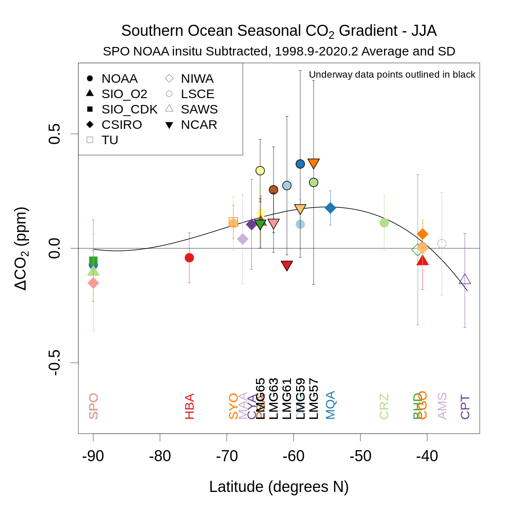
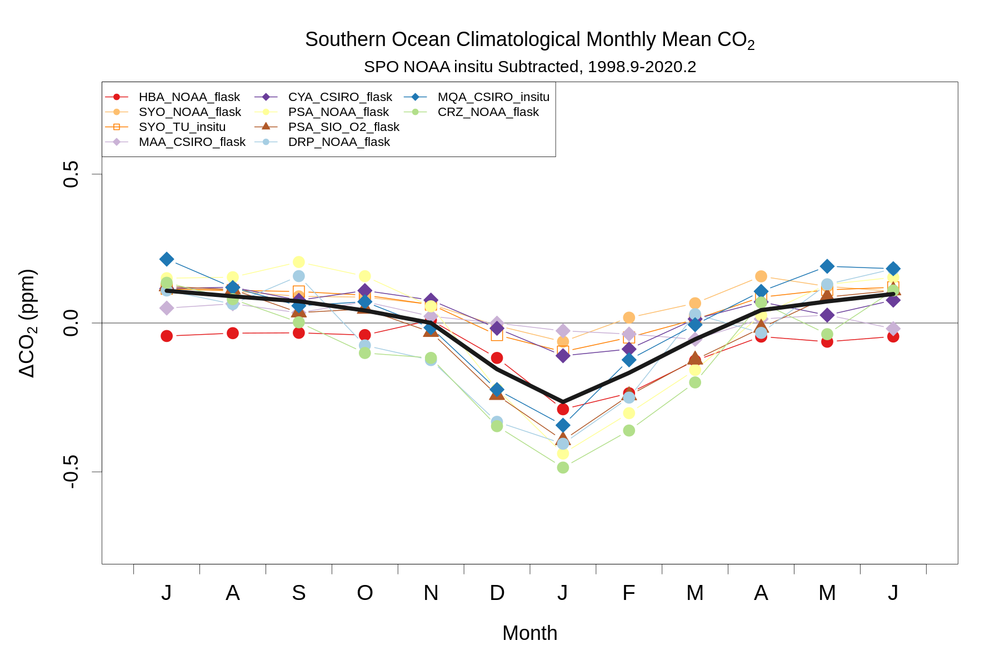

Process surface observations¶
R program to read in and monthly-average Southern Ocean station and shipboard CO2 data
library('ncdf4')
library('yaml')
project_tmpdir_obs = read_yaml('../_config_calc.yml')$project_tmpdir_obs
username = Sys.info()['user']
project_tmpdir_obs = gsub('\\{\\{env\\[\'USER\'\\]\\}\\}', username, project_tmpdir_obs)
# General options:
endyear=2020
gvp60dir='obspack_co2_1_GLOBALVIEWplus_v6.0_2020-09-11/data/nc'
gvp70dir='obspack_co2_1_GLOBALVIEWplus_v7.0_2021-08-18/data/nc'
# LMG options:
uwlatbin=2; uwlatoffset=0 # by 2s, 56-66
noaalmgfiltco=0.3 # hour-to-hour jumps less than 0.3 ppm excludes 16%
ncarlmgfiltco=0.3 # hour-to-hour jumps less than 0.3 ppm excludes 20%
noaaagghourly=T # flag to only aggregate once
ncaragghourly=T # flag to only aggregate once
# Aggregation options:
minnmon=2 # lowest number of months allowed for seasonal average
meanwin=c(1998.9,2020.2) # window for calculating means, inclusive
# Plotting options
zoomyr=1999
ylm=c(-0.75,0.75)
# Select which sites to use:
stationlist=read.table('SO_CO2_stationlist.txt',header=T,stringsAsFactors=F) # use = 0 for do not use, 2 for SO, 1 was for reference but no longer used - use refcol below
print(stationlist)
station lab method use lat lon masl
1 SPO NOAA insitu 1 -89.9800 -24.8000 2810
2 SPO NOAA flask 0 -89.9800 -24.8000 2810
3 SPO SIO_O2 flask 0 -89.9800 -24.8000 2810
4 SPO SIO_CDK flask 0 -89.9800 -24.8000 2810
5 SPO CSIRO flask 0 -89.9800 -24.8000 2810
6 HBA NOAA flask 2 -75.6050 -26.2100 10
7 SYO NOAA flask 2 -69.0125 39.5900 14
8 SYO TU insitu 2 -69.0125 39.5900 14
9 MAA CSIRO flask 2 -67.6170 62.8670 32
10 CYA CSIRO flask 2 -66.2830 110.5170 47
11 PSA NOAA flask 2 -64.9000 -64.0000 10
12 PSA SIO_O2 flask 2 -64.9000 -64.0000 10
13 DRP NOAA flask 2 -59.0000 -64.6900 10
14 MQA CSIRO insitu 2 -54.4830 158.9670 6
15 CRZ NOAA flask 2 -46.4337 51.8478 197
16 BHD NIWA insitu 0 -41.4083 174.8710 85
17 CGO NOAA flask 0 -40.6830 144.6900 164
18 CGO SIO_O2 flask 0 -40.6830 144.6900 104
19 CGO CSIRO flask 0 -40.6830 144.6900 164
20 CGO CSIRO insitu 0 -40.6830 144.6900 164
21 AMS LSCE insitu 0 -37.7983 77.5378 55
22 CPT SAWS insitu 0 -34.3523 18.4891 230
23 LMG65 NOAA underway 0 -65.0000 -63.5500 10
24 LMG63 NOAA underway 0 -63.0000 -61.7000 10
25 LMG61 NOAA underway 0 -61.0000 -62.0000 10
26 LMG59 NOAA underway 0 -59.0000 -63.3700 10
27 LMG57 NOAA underway 0 -57.0000 -64.2300 10
28 LMG65 NCAR underway 0 -65.0000 -68.5800 10
29 LMG63 NCAR underway 0 -63.0000 -68.5800 10
30 LMG61 NCAR underway 0 -61.0000 -68.5800 10
31 LMG59 NCAR underway 0 -59.0000 -68.5800 10
32 LMG57 NCAR underway 0 -57.0000 -68.5800 10
Read in surface data:¶
# set up arrays
allsta=data.frame(cbind(rep(seq(1957,endyear),each=12),rep(seq(1,12),times=endyear-1957+1)))
colnames(allsta)=c('year','month')
yrfrac=allsta$year+(allsta$mon-0.5)/12
monseas=rep(1,nrow(allsta)) # DJF
monseas[allsta$month>2&allsta$month<6]=2 # MAM
monseas[allsta$month>5&allsta$month<9]=3 # JJA
monseas[allsta$month>8&allsta$month<12]=4 # SON
seasyear=trunc(yrfrac+1/12) # shift Dec to next year
allseas=data.frame(cbind(aggregate(monseas,by=list(seas=monseas,year=seasyear),mean)$x,aggregate(yrfrac,by=list(seas=monseas,year=seasyear),mean)$x))
colnames(allseas)=c('seas','yrfrac')
alllat=NULL
alllon=NULL
allalt=NULL
# loop over records
for(i in c(1:nrow(stationlist))){
staco2=NULL
sta=stationlist$station[i]
lab=stationlist$lab[i]
meth=stationlist$method[i]
use=stationlist$use[i]
labcode=stationlist$labcode[i]
print(c(sta,lab,meth,use))
if(lab=='NOAA'){
if(meth!='underway'){
if(sta=='DRP'){ type='shipboard' } else { type='surface' }
if(meth=='insitu'){ flag='allvalid' } else { flag='representative' } # SPO = allvalid
nc=nc_open(paste(project_tmpdir_obs,'/',gvp60dir,'/co2_',tolower(sta),'_',type,'-',meth,'_1_',flag,'.nc',sep=''))
gvp=data.frame(cbind(ncvar_get(nc,'time_decimal'),t(ncvar_get(nc,'time_components')),ncvar_get(nc,'value')*1E6)) ; colnames(gvp)=c('date','year','mon','day','hour','min','sec','co2')
qcflag=ncvar_get(nc,'qcflag'); gvp$co2[substr(qcflag,1,1)!='.']=NA; gvp$co2[substr(qcflag,2,2)!='.']=NA
gvpmon=aggregate(gvp$co2,by=list(year=gvp$year,month=gvp$mon),mean,na.rm=T) ; gvpmon=gvpmon[order(gvpmon$year+gvpmon$mon/12),]
staco2=data.frame(cbind(gvpmon$year,gvpmon$month,gvpmon$x)); colnames(staco2)=c('year','month','co2')
} else { # LMG
if(noaaagghourly){ # only need to do once
type='shipboard'
fl=nc_open(paste(project_tmpdir_obs,'/',gvp70dir,'/co2_gould_',type,'-insitu_1_allvalid.nc',sep='')) # filename uses 'gould'
flgvp=data.frame(cbind(ncvar_get(fl,'time_decimal'),t(ncvar_get(fl,'time_components')),ncvar_get(fl,'value_original_scale')*1E6,ncvar_get(fl,'latitude'),ncvar_get(fl,'longitude')))
colnames(flgvp)=c('date','year','mon','day','hour','min','sec','co2','lat','lon')
# GV+ 7.0 is X2019, so have to use 'value_original_scale'
# aggregate to hourly medians
noaalmghourly=aggregate(flgvp,by=list(year=flgvp$year,mon=flgvp$mon,day=flgvp$day,hour=flgvp$hour),median,na.rm=T)
noaalmgdt=ISOdatetime(noaalmghourly$year,noaalmghourly$mon,noaalmghourly$day,noaalmghourly$hour,rep(0,nrow(noaalmghourly)),rep(0,nrow(noaalmghourly)),tz='UTC')
noaalmghourly=noaalmghourly[order(noaalmgdt),]
noaalmgdt=noaalmgdt[order(noaalmgdt)]
# filter based on 2-hour differences
co2steps1=c(999,diff(noaalmghourly$co2))
co2steps2=c(diff(noaalmghourly$co2),999)
noaalmghourly$co2[abs(co2steps1)>noaalmgfiltco|abs(co2steps2)>noaalmgfiltco]=NA # 0.3 cuts 16%
# exclude prior to Dec 2005
noaalmghourly=noaalmghourly[noaalmghourly$year>2005|noaalmghourly$mon>11,]
# exclude box around PSA
psalat=c(-64.82,-64.72) # 1/10 of deg lat or +/-3 nm
psalon=c(-64.10,-64.00)
noaalmghourly$co2[noaalmghourly$lat>psalat[1]&noaalmghourly$lat<psalat[2]&noaalmghourly$lon>psalon[1]&noaalmghourly$lon<psalon[2]]=NA
noaaagghourly=F
}
# select latitude bin
noaalmglatbin=trunc((noaalmghourly$lat-uwlatoffset)/uwlatbin)*uwlatbin+uwlatoffset # north edge of bin
latlmg=noaalmghourly[noaalmglatbin==stationlist$lat[i]+uwlatbin/2,]
monlmg=aggregate(latlmg,by=list(year=latlmg$year,month=latlmg$mon),mean,na.rm=T)
lmgyrfrac=monlmg$year+monlmg$month/12-0.5
monlmg=monlmg[order(lmgyrfrac),]
staco2=data.frame(cbind(monlmg$year,monlmg$mon,monlmg$co2))
names(staco2)=c('year','month','co2')
}
} else if(lab=='NCAR'){ # LMG, assume meth=='underway'
if(ncaragghourly){ # only need to do once
alllmg=read.table(paste(project_tmpdir_obs,'/ncar-lmg/lmg_all_results.txt',sep=''),header=T,stringsAsFactors=F) # 1-min data
alllmg=alllmg[!is.na(alllmg$lat),] # ~6000 missing lats
# aggregate to hourly medians
alllmg=alllmg[,names(alllmg)!='leg'&names(alllmg)!='crsname'] # can not average text variables
ncarlmghourly=aggregate(alllmg,by=list(year=alllmg$year,mon=alllmg$mon,day=alllmg$day,hour=alllmg$hour),median,na.rm=T)
ncarlmgdt=ISOdatetime(ncarlmghourly$year,ncarlmghourly$mon,ncarlmghourly$day,ncarlmghourly$hour,rep(0,nrow(ncarlmghourly)),rep(0,nrow(ncarlmghourly)),tz='UTC')
ncarlmghourly=ncarlmghourly[order(ncarlmgdt),]
ncarlmgdt=ncarlmgdt[order(ncarlmgdt)]
# filter based on 2-hour differences
co2steps1=c(999,diff(ncarlmghourly$co2))
co2steps2=c(diff(ncarlmghourly$co2),999)
ncarlmghourly$co2[abs(co2steps1)>ncarlmgfiltco|abs(co2steps2)>ncarlmgfiltco]=NA # 0.3 cuts 20% of the data
# exclude box around PSA
psalat=c(-64.82,-64.72) # 1/10 of deg lat or +/-3 nm
psalon=c(-64.10,-64.00)
ncarlmghourly$co2[ncarlmghourly$lat>psalat[1]&ncarlmghourly$lat<psalat[2]&ncarlmghourly$lon>psalon[1]&ncarlmghourly$lon<psalon[2]]=NA
ncaragghourly=F
}
# select latitude bin
ncarlmglatbin=trunc((ncarlmghourly$lat-uwlatoffset)/uwlatbin)*uwlatbin+uwlatoffset
latlmg=ncarlmghourly[ncarlmglatbin==stationlist$lat[i]+uwlatbin/2,]
monlmg=aggregate(latlmg,by=list(year=latlmg$year,month=latlmg$mon),mean,na.rm=T)
lmgyrfrac=monlmg$year+monlmg$month/12-0.5
monlmg=monlmg[order(lmgyrfrac),]
staco2=data.frame(cbind(monlmg$year,monlmg$month,monlmg$co2))
names(staco2)=c('year','month','co2')
} else if(lab=='SIO_O2'){
infile=paste(project_tmpdir_obs,'/sio/',tolower(sta),'cav.csv',sep='')
nhead=41
names=readLines(infile,n=nhead)[nhead] ; names=unlist(strsplit(names,c(',',', '))) ; names=names[names!='']; names[1]='Date'; names=gsub(' ','',names)
indata=read.csv(infile,skip=nhead+1,stringsAsFactors=F); colnames(indata)=names
# aggregate to monthly
indata$year=as.numeric(substr(indata$Date,1,4))
indata$mon=as.numeric(substr(indata$Date,6,7))
indatamon=aggregate(indata[,c('Value','StD','N','T-Excel','T-Decimal','Spline','Val-Spl')],by=list(year=indata$year,month=indata$mon),mean,na.rm=T); indatamon=indatamon[order(indatamon[,'T-Decimal']),] # allowing months with 1 sample
staco2=data.frame(cbind(indatamon$year,indatamon$month,indatamon$Value)); colnames(staco2)=c('year','month','co2')
# adjust SIO O2 Program CO2 from VH344-X2020 to WMO X2007 scale based on linear fit to NCAR primaries:
sioo22gmd1=-0.002903; sioo22gmd0=1.041
staco2$co2=staco2$co2*sioo22gmd1+sioo22gmd0+staco2$co2
} else if(lab=='SIO_CDK'){
infile=paste(project_tmpdir_obs,'/sio/monthly_merge_co2_spo.csv',sep=''); nhead=59 # the obs have been slid parallel to a 4-harmonic (+ stiff-spline) fit to 2400 on the 15th of each month
names=c('year','month','exceldate','date','co2','deseas','fit','fitdeseas','filled','filleddeseas')
indata=read.csv(infile,skip=nhead,stringsAsFactors=F); colnames(indata)=names
staco2=data.frame(cbind(indata$year,indata$month,indata$co2)); colnames(staco2)=c('year','month','co2')
staco2$co2[staco2$co2==-99.99]=NA
# adjust SIO CO2 Program CO2 from X12 to WMO X2007 scale based on linear fit to NCAR primaries (same as for SIO O2):
sioo22gmd1=-0.002903; sioo22gmd0=1.041
staco2$co2=staco2$co2*sioo22gmd1+sioo22gmd0+staco2$co2
} else if(lab=='CSIRO'){
type='surface'
if(meth=='flask'){
fl=nc_open(paste(project_tmpdir_obs,'/',gvp60dir,'/co2_',tolower(sta),'_',type,'-flask_2_representative.nc',sep=''))
flgvp=data.frame(cbind(ncvar_get(fl,'time_decimal'),t(ncvar_get(fl,'time_components')),ncvar_get(fl,'value')*1E6)) ; colnames(flgvp)=c('date','year','mon','day','hour','min','sec','co2')
staco2=aggregate(flgvp$co2,by=list(year=flgvp$year,month=flgvp$mon),mean,na.rm=T) ; staco2=staco2[order(staco2$year+staco2$mon/12),]
} else if(meth=='insitu'){
is=nc_open(paste(project_tmpdir_obs,'/WDCGG/nc/co2/hourly/co2_',tolower(sta),'_surface-insitu_16_9999-9999_hourly.nc',sep=''))
isgvp=data.frame(cbind(t(ncvar_get(is,'start_time_components')),ncvar_get(is,'value'))) ; colnames(isgvp)=c('year','mon','day','hour','min','sec','co2')
isgvp$co2[ncvar_get(is,'QCflag')!=1]=NA
staco2=aggregate(isgvp$co2,by=list(year=isgvp$year,month=isgvp$mon),mean,na.rm=T) ; staco2=staco2[order(staco2$year+staco2$mon/12),]
}
names(staco2)=c('year','month','co2')
} else if(lab=='SAWS'){ # CPT, get CO2 from ObsPack and 222Rn from WDCGG
is=nc_open(paste(project_tmpdir_obs,'/',gvp60dir,'/co2_cpt_surface-insitu_36_marine.nc',sep='')) # all 'qcflag' = 1
isgvp=data.frame(cbind(t(ncvar_get(is,'time_components')),ncvar_get(is,'value')*1E6)) ; colnames(isgvp)=c('year','mon','day','hour','min','sec','co2')
# filter for 222Rn < 150
rn=nc_open(paste(project_tmpdir_obs,'/WDCGG/nc/222rn/hourly/222rn_cpt_surface-insitu_7_9999-9999_hourly.nc',sep=''))
rncust=data.frame(cbind(t(ncvar_get(rn,'start_time_components')),ncvar_get(rn,'value'))) ; colnames(rncust)=c('year','mon','day','hour','min','sec','rn')
isgvp=merge(isgvp,rncust,by=c('year','mon','day','hour','min','sec'),all=F)
isgvp$co2[isgvp$rn>150]=NA
isgvp$co2[is.na(isgvp$rn)]=NA
staco2=aggregate(isgvp$co2,by=list(year=isgvp$year,month=isgvp$mon),mean,na.rm=T) ; staco2=staco2[order(staco2$year+staco2$mon/12),]
names(staco2)=c('year','month','co2')
} else if(lab=='LSCE'){ # AMS, get from ObsPack GV+ 7.0 with flagging
is=nc_open(paste(project_tmpdir_obs,'/',gvp70dir,'/co2_ams_surface-insitu_11_allvalid.nc',sep=''))
isgvp=data.frame(cbind(t(ncvar_get(is,'time_components')),ncvar_get(is,'value_original_scale')*1E6)) ; colnames(isgvp)=c('year','mon','day','hour','min','sec','co2') # GV+ 7.0 is X2019, so have to use 'value_original_scale'
isgvp$co2[ncvar_get(is,'obs_flag')==0]=NA
staco2=aggregate(isgvp$co2,by=list(year=isgvp$year,month=isgvp$mon),mean,na.rm=T) ; staco2=staco2[order(staco2$year+staco2$mon/12),]
names(staco2)=c('year','month','co2')
} else if(lab=='TU'){ # SYO, get from ObsPack
is=nc_open(paste(project_tmpdir_obs,'/',gvp60dir,'/co2_',tolower(sta),'_surface-insitu_8_allvalid.nc',sep='')) # all 'obs_flag' = 1
isgvp=data.frame(cbind(t(ncvar_get(is,'time_components')),ncvar_get(is,'value')*1E6)) ; colnames(isgvp)=c('year','mon','day','hour','min','sec','co2')
staco2=aggregate(isgvp$co2,by=list(year=isgvp$year,month=isgvp$mon),mean,na.rm=T) ; staco2=staco2[order(staco2$year+staco2$mon/12),]
names(staco2)=c('year','month','co2')
} else if(lab=='NIWA'){ # BHD, get from NIWA directly
indata=read.table(paste(project_tmpdir_obs,'/niwa/co2_bhd_surface-insitu_57_1978-2019_hourly.txt',sep=''),header=T)
indata=indata[indata$QCflag==1,] # within steady southerly period
isgvp=data.frame(cbind(indata$year,indata$month,indata$day,indata$hour,indata$minute,indata$second,indata$value)); colnames(isgvp)=c('year','mon','day','hour','min','sec','co2')
staco2=aggregate(isgvp$co2,by=list(year=isgvp$year,month=isgvp$mon),mean,na.rm=T) ; staco2=staco2[order(staco2$year+staco2$mon/12),]
names(staco2)=c('year','month','co2')
}
# aggregate records by season
if(!is.null(staco2)){
oldnames=colnames(allsta)
allsta=merge(allsta,staco2,by=c('year','month'),all.x=T)
colnames(allsta)=c(oldnames,paste(sta,'_',lab,'_',meth,sep=''))
# aggregate by season
seasco2=aggregate(allsta[,ncol(allsta)],by=list(seas=monseas,year=seasyear),mean,na.rm=T)$x # with na.rm=T so returns value even if only 1 month present (alldiffs filtered for < 2 months below)
oldnames=colnames(allseas)
allseas=cbind(allseas,seasco2) # since aggregating after merge, all rows present
colnames(allseas)=c(oldnames,paste(sta,'_',lab,'_',meth,sep=''))
alllat=c(alllat,stationlist$lat[i])
alllon=c(alllon,stationlist$lon[i])
allalt=c(allalt,stationlist$masl[i])
}
} # loop on surface record
[1] "SPO" "NOAA" "insitu" "1"
[1] "SPO" "NOAA" "flask" "0"
[1] "SPO" "SIO_O2" "flask" "0"
[1] "SPO" "SIO_CDK" "flask" "0"
[1] "SPO" "CSIRO" "flask" "0"
[1] "HBA" "NOAA" "flask" "2"
[1] "SYO" "NOAA" "flask" "2"
[1] "SYO" "TU" "insitu" "2"
[1] "MAA" "CSIRO" "flask" "2"
[1] "CYA" "CSIRO" "flask" "2"
[1] "PSA" "NOAA" "flask" "2"
[1] "PSA" "SIO_O2" "flask" "2"
[1] "DRP" "NOAA" "flask" "2"
[1] "MQA" "CSIRO" "insitu" "2"
[1] "CRZ" "NOAA" "flask" "2"
[1] "BHD" "NIWA" "insitu" "0"
[1] "CGO" "NOAA" "flask" "0"
[1] "CGO" "SIO_O2" "flask" "0"
[1] "CGO" "CSIRO" "flask" "0"
[1] "CGO" "CSIRO" "insitu" "0"
[1] "AMS" "LSCE" "insitu" "0"
[1] "CPT" "SAWS" "insitu" "0"
[1] "LMG65" "NOAA" "underway" "0"
[1] "LMG63" "NOAA" "underway" "0"
[1] "LMG61" "NOAA" "underway" "0"
[1] "LMG59" "NOAA" "underway" "0"
[1] "LMG57" "NOAA" "underway" "0"
[1] "LMG65" "NCAR" "underway" "0"
[1] "LMG63" "NCAR" "underway" "0"
[1] "LMG61" "NCAR" "underway" "0"
[1] "LMG59" "NCAR" "underway" "0"
[1] "LMG57" "NCAR" "underway" "0"
# print out time periods
for(i in c(3:ncol(allsta))){
ind=c(1:nrow(allsta))[!is.na(allsta[,i])]
print(paste(colnames(allsta)[i],',',month.abb[allsta$month[ind[1]]],allsta$year[ind[1]],'-',month.abb[allsta$month[tail(ind,1)]],allsta$year[tail(ind,1)]))
}
[1] "SPO_NOAA_insitu , Jan 1976 - Dec 2019"
[1] "SPO_NOAA_flask , Jul 1975 - Dec 2019"
[1] "SPO_SIO_O2_flask , Dec 1991 - Dec 2020"
[1] "SPO_SIO_CDK_flask , Jun 1957 - Dec 2020"
[1] "SPO_CSIRO_flask , Mar 1991 - Dec 2019"
[1] "HBA_NOAA_flask , Jan 1983 - Dec 2019"
[1] "SYO_NOAA_flask , Feb 1986 - Dec 2019"
[1] "SYO_TU_insitu , Feb 1984 - Dec 2019"
[1] "MAA_CSIRO_flask , Nov 1990 - Dec 2019"
[1] "CYA_CSIRO_flask , Jun 1997 - Dec 2019"
[1] "PSA_NOAA_flask , Jan 1978 - Dec 2019"
[1] "PSA_SIO_O2_flask , Sep 1996 - Nov 2020"
[1] "DRP_NOAA_flask , Mar 2006 - Dec 2019"
[1] "MQA_CSIRO_insitu , Jul 2005 - Nov 2016"
[1] "CRZ_NOAA_flask , Mar 1991 - Dec 2019"
[1] "BHD_NIWA_insitu , Apr 1978 - Dec 2019"
[1] "CGO_NOAA_flask , Apr 1984 - Dec 2019"
[1] "CGO_SIO_O2_flask , Mar 1991 - Dec 2020"
[1] "CGO_CSIRO_flask , Jun 1991 - Dec 2019"
[1] "CGO_CSIRO_insitu , Apr 2004 - Dec 2019"
[1] "AMS_LSCE_insitu , Jan 1981 - Dec 2020"
[1] "CPT_SAWS_insitu , Mar 1999 - Dec 2018"
[1] "LMG65_NOAA_underway , Dec 2005 - Dec 2020"
[1] "LMG63_NOAA_underway , Dec 2005 - Dec 2020"
[1] "LMG61_NOAA_underway , Dec 2005 - Dec 2020"
[1] "LMG59_NOAA_underway , Dec 2005 - Dec 2020"
[1] "LMG57_NOAA_underway , Dec 2004 - Jun 2020"
[1] "LMG65_NCAR_underway , Jun 2012 - Aug 2017"
[1] "LMG63_NCAR_underway , Jun 2012 - Aug 2017"
[1] "LMG61_NCAR_underway , Jun 2012 - Aug 2017"
[1] "LMG59_NCAR_underway , Jun 2012 - Aug 2017"
[1] "LMG57_NCAR_underway , Jun 2012 - Sep 2017"
# write out results
sel=allsta$year>=trunc(meanwin[1])&allsta$year<=trunc(meanwin[2])
write(paste(names(allsta),collapse=' '),'../data/surface-obs/SO_CO2_monthly.txt')
write(t(allsta[sel,]),'../data/surface-obs/SO_CO2_monthly.txt',append=T,ncol=ncol(allsta))
write('record lat lon alt','../data/surface-obs/SO_CO2_locations.txt')
write(rbind(names(allsta)[3:ncol(allsta)],alllat,alllon,allalt),'../data/surface-obs/SO_CO2_locations.txt',append=T,ncol=4)
code from here to end (and seasonal aggregation above) not used in calculation but kept for diagnostic purposes¶
# Calc diffs for all stations using NOAA in situ SPO record as the reference
alldiffsmon=allsta # monthly resolution
refcol=which(names(allsta)=='SPO_NOAA_insitu')
for(i in c(3:ncol(allsta))){
alldiffsmon[,i]=allsta[,i]-allsta[,refcol]
}
alldiffsmonclim=aggregate(alldiffsmon[alldiffsmon$year>=meanwin[1]&alldiffsmon$year<=meanwin[2],3:ncol(alldiffsmon)],by=list(month=alldiffsmon$month[alldiffsmon$year>=meanwin[1]&alldiffsmon$year<=meanwin[2]]),mean,na.rm=T) # allows missing months
alldiffsmonclimcomp=apply(alldiffsmonclim[,which(stationlist$use==2)+1],1,mean,na.rm=T)
alldiffs=data.frame(cbind(aggregate(monseas,by=list(seas=monseas,year=seasyear),mean)$x,aggregate(yrfrac,by=list(seas=monseas,year=seasyear),mean)$x,aggregate(alldiffsmon[,3:ncol(alldiffsmon)],
by=list(seas=monseas,year=seasyear),mean,na.rm=T)[,3:ncol(alldiffsmon)]))
allnmon=data.frame(cbind(aggregate(monseas,by=list(seas=monseas,year=seasyear),mean)$x,aggregate(yrfrac,by=list(seas=monseas,year=seasyear),mean)$x,aggregate(!is.na(alldiffsmon[,3:ncol(alldiffsmon)]),
by=list(seas=monseas,year=seasyear),sum)[,3:ncol(alldiffsmon)]))
alldiffs[,3:ncol(alldiffs)][allnmon[,3:ncol(alldiffs)]<minnmon]=NA ## allow seasons with one missing month, but not two
colnames(alldiffs)[1:2]=c('seas','yrfrac')
# Calc long term mean and sd of diffs, from seasonal differences
meandiff=apply(alldiffs[alldiffs$yrfrac>=meanwin[1]&alldiffs$yrfrac<=meanwin[2],],2,mean,na.rm=T)
sddiff=apply(alldiffs[alldiffs$yrfrac>=meanwin[1]&alldiffs$yrfrac<=meanwin[2],],2,sd,na.rm=T)
sumdiff=apply(!is.na(alldiffs[alldiffs$yrfrac>=meanwin[1]&alldiffs$yrfrac<=meanwin[2],]),2,sum,na.rm=T)
meandiffseas=NULL
sddiffseas=NULL
for(seas in c(1:4)){
meandiffseas=rbind(meandiffseas,apply(alldiffs[alldiffs$yrfrac>=meanwin[1]&alldiffs$yrfrac<=meanwin[2]&alldiffs$seas==seas,],2,mean,na.rm=T))
sddiffseas=rbind(sddiffseas,apply(alldiffs[alldiffs$yrfrac>=meanwin[1]&alldiffs$yrfrac<=meanwin[2]&alldiffs$seas==seas,],2,sd,na.rm=T))
}
meandiffseas=data.frame(meandiffseas)
sddiffseas=data.frame(sddiffseas)
sddiffseas$seas=meandiffseas$seas
# Make plots:
library('RColorBrewer')
cols=rep(brewer.pal(12,'Paired'),5) # can handle up to 60 stations
pchs=rep(21,length(cols)) # NOAA
pchs[which(stationlist$lab=='SIO_CDK')]=22
pchs[which(stationlist$lab=='CSIRO')]=23
pchs[which(stationlist$lab=='SIO_O2')]=24
pchs[which(stationlist$lab=='NCAR')]=25
pchs[which(stationlist$lab=='TU')]=0
pchs[which(stationlist$lab=='LSCE')]=1
pchs[which(stationlist$lab=='SAWS')]=2
pchs[which(stationlist$lab=='NIWA')]=5
nmulti=sum(grepl('Multi',names(alldiffs)))
numsta=ncol(allsta)-2-nmulti
bgs=cols # these are fill colors for pch 21-25
cols[which(stationlist$method=='underway')]=rgb(0,0,0) # these are edge colors for pch 21-25
seasname=c('DJF','MAM','JJA','SON')
for(seas in c(1,3)){
# lat grad of diffs
png(paste('so_station_co2diff_gradient_',meanwin[1],'-',meanwin[2],'_',seasname[seas],'.png',sep=''),height=1200,width=1200,pointsize=30)
par(mar=c(5,5,4,2)+0.1)
plot(as.numeric(stationlist$lat),meandiffseas[meandiffseas$seas==seas,3:ncol(meandiffseas)],type='n',xlim=c(-90,max(as.numeric(stationlist$lat))),ylim=ylm,
main=substitute(paste('Southern Ocean Seasonal ',CO[2],' Gradient - ',v),list(v=seasname[seas])),ylab=expression(paste(Delta,CO[2],' (ppm)')),xlab='Latitude (degrees N)',cex.main=1.2,cex.axis=1.2,cex.lab=1.2)
abline(h=0)
mtext(paste(stationlist$station[refcol-2],' ',stationlist$lab[refcol-2],' ',stationlist$method[refcol-2],' Subtracted, ',meanwin[1],'-',meanwin[2],' Average and SD',sep=''),3,0.3)
segwd=0.2
stasel=c(1:numsta)[c(1:numsta)+2!=refcol&!is.na(meandiffseas[meandiffseas$seas==seas,3:(length(meandiff)-nmulti)])]
y=c(0,as.numeric(meandiffseas[meandiffseas$seas==seas,3:length(meandiff)][stasel]))
x=c(-90,stationlist$lat[stasel])
w=c(10000,as.numeric(1/sddiffseas[sddiffseas$seas==seas,3:length(meandiff)][stasel]^2)) # 10000 for SPO equiv of SD of 0.01
new=data.frame(x=seq(-90,ceiling(max(x)),1))
lines(new$x,predict.lm(lm(y ~ poly(x,3),weights=w),new),lwd=2)
for(i in stasel){
segments(stationlist$lat[i],meandiffseas[meandiffseas$seas==seas,i+2]-sddiffseas[sddiffseas$seas==seas,i+2],stationlist$lat[i],meandiffseas[meandiffseas$seas==seas,i+2]+sddiffseas[sddiffseas$seas==seas,i+2],col=cols[i])
segments(stationlist$lat[i]-segwd,meandiffseas[meandiffseas$seas==seas,i+2]-sddiffseas[sddiffseas$seas==seas,i+2],stationlist$lat[i]+segwd,meandiffseas[meandiffseas$seas==seas,i+2]-sddiffseas[sddiffseas$seas==seas,i+2],col=cols[i])
segments(stationlist$lat[i]-segwd,meandiffseas[meandiffseas$seas==seas,i+2]+sddiffseas[sddiffseas$seas==seas,i+2],stationlist$lat[i]+segwd,meandiffseas[meandiffseas$seas==seas,i+2]+sddiffseas[sddiffseas$seas==seas,i+2],col=cols[i])
points(stationlist$lat[i],meandiffseas[meandiffseas$seas==seas,i+2],pch=pchs[i],bg=bgs[i],col=cols[i],cex=1.5,lwd=2)
if(any(!is.na(meandiffseas[meandiffseas$seas==seas,i+2]))) text(stationlist$lat[i],ylm[1],stationlist$sta[i],col=cols[i],srt=90,offset=0,adj=c(0,0.5))
}
labsel=stationlist$lab[stasel]; pchsel=pchs[stasel]; pchsel=pchsel[!duplicated(labsel)]; labsel=labsel[!duplicated(labsel)]
legend('topleft',labsel,pch=pchsel,pt.bg='black',cex=1.0,col='gray30',ncol=2)
if(any(stationlist$method=='underway')) legend('topright','Underway data points outlined in black',cex=0.75,bty='n')
dev.off()
} # loop on season
# Plot composite seasonal cycle
compflag=paste(tolower(substr(stationlist$station[stationlist$use==2],1,1)),collapse='')
refflag='s'
png(paste('so_station_composite_co2diff_seascycle_',compflag,'-',refflag,'_',meanwin[1],'-',meanwin[2],'.png',sep=''),height=1200,width=1800,pointsize=30)
par(mar=c(5,5,4,2)+0.1)
plot(seq(0.5,11.5),alldiffsmonclim[c(7:12,1:6),3],type='n',xlim=c(0,12),ylim=ylm,main=expression(paste('Southern Ocean Climatological Monthly Mean ',CO[2])),ylab=expression(paste(Delta,CO[2],' (ppm)')),xlab='Month',cex.main=1.2,cex.lab=1.2,axes=F)
box()
axis(2,cex.axis=1.2)
axis(1,at=c(0:12),labels=F,cex.axis=1.5)
axis(1,seq(0.5,11.5),labels=c('J','A','S','O','N','D','J','F','M','A','M','J'),cex.axis=1.3,tick=F)
mtext(paste(stationlist$station[refcol-2],' ',stationlist$lab[refcol-2],' ',stationlist$method[refcol-2],' Subtracted, ',meanwin[1],'-',meanwin[2],sep=''),3,0.3)
abline(h=0)
for(i in c(1:numsta)[stationlist$use==2]){
points(seq(0.5,11.5),alldiffsmonclim[c(7:12,1:6),i+1],type='b',pch=pchs[i],bg=bgs[i],col=cols[i],cex=1.5,lwd=2)
}
lines(seq(0.5,11.5),alldiffsmonclimcomp[c(7:12,1:6)],col='grey10',lwd=10)
legend('topleft',names(alldiffsmonclim)[c(1:numsta)[stationlist$use==2]+1],col=cols[c(1:numsta)[stationlist$use==2]],pch=pchs[c(1:numsta)[stationlist$use==2]],pt.bg=bgs[c(1:numsta)[stationlist$use==2]],cex=0.75,pt.cex=0.75,lwd=2,ncol=3) # pt.lwd?
dev.off()
png: 2


